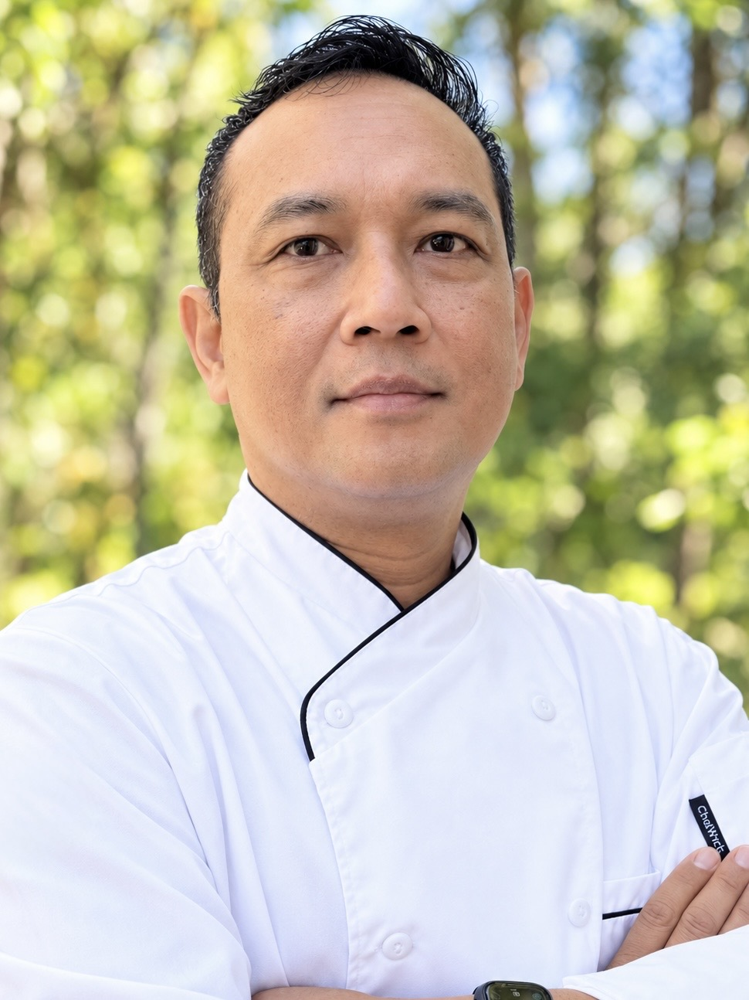

WAYAN SUTRIASA
Professional Chef

Welcome, I’m Wayan.
I’ve been a chef for over 25 years, and I’ve lost count of how many times people have asked me to share the recipes for their favorite dishes I’ve prepared. That’s what inspired me to create this website—a place where I can share my recipes, culinary experiences, and passion for cooking with you.
But first, let me tell you a little about myself.
I was born and raised in Bali, Indonesia, where my love for cooking began in my mother’s kitchen. Her passion for food and the wonderful flavors of Balinese cuisine inspired me to pursue a career in the culinary arts.
In 1997, I graduated from the Epicurean School of Culinary Arts in Los Angeles. Since then, I’ve had the privilege of working in catering, fine dining restaurants, hotels, and private country clubs. Today, I serve as the Executive Chef at a prestigious country club on the East Coast of the United States.
Beyond the kitchen, I also enjoy learning new skills and exploring technology. In fact, I designed and coded this website myself! I’m constantly working to improve it and make your experience even better.
My goal is simple: to share delicious recipes, inspire creativity, and help you build confidence in the kitchen—whether you’re preparing a meal for your family or cooking professionally in a restaurant.
If you enjoy my recipes and would like to support my work, please consider clicking the Donate button below. Your support means a lot and helps me continue sharing my culinary journey with you.
Thank you for visiting, and most importantly, have fun cooking!
Eat Good and Be Happy...
— Chef Wayan